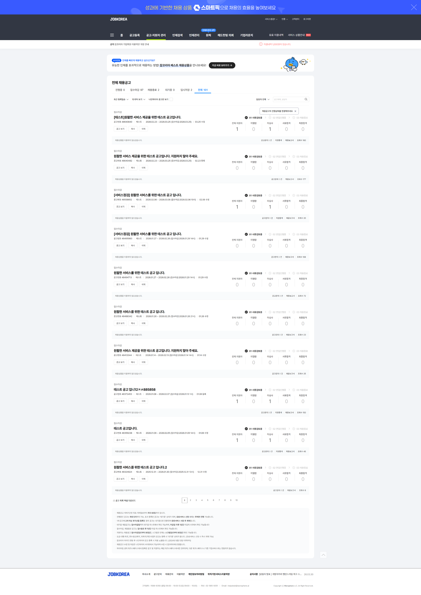
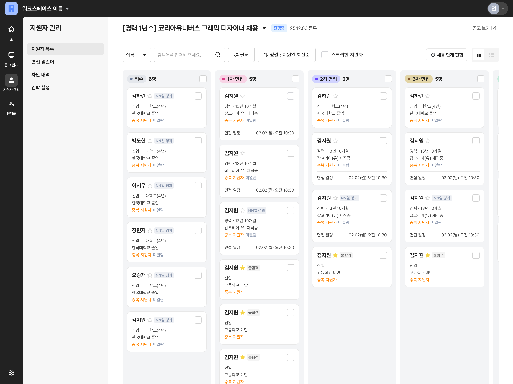
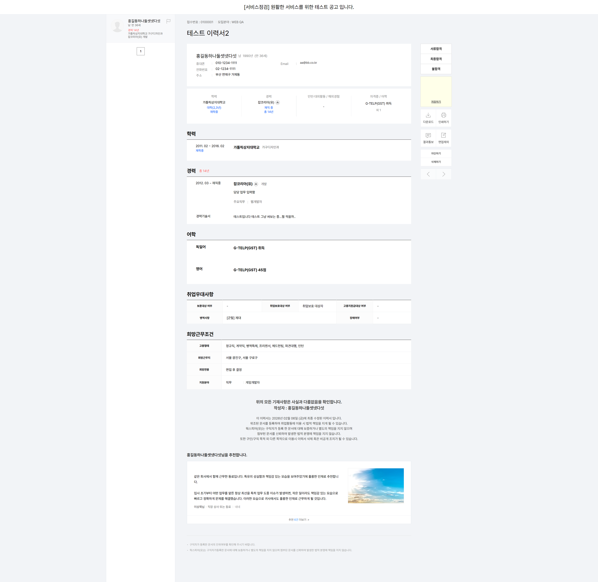
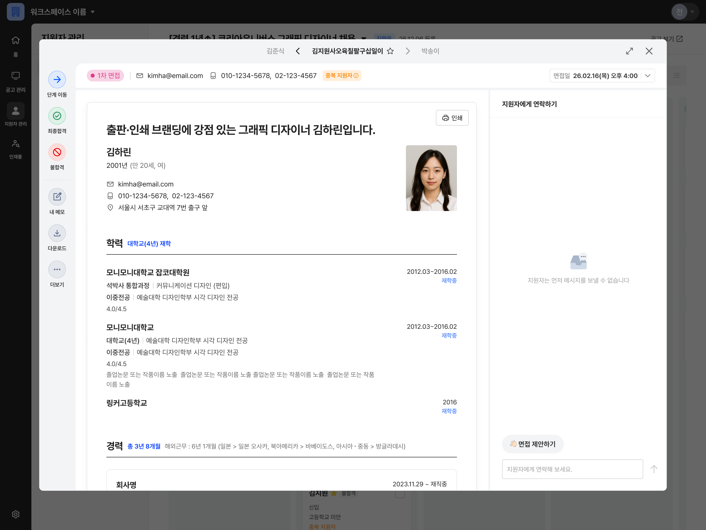
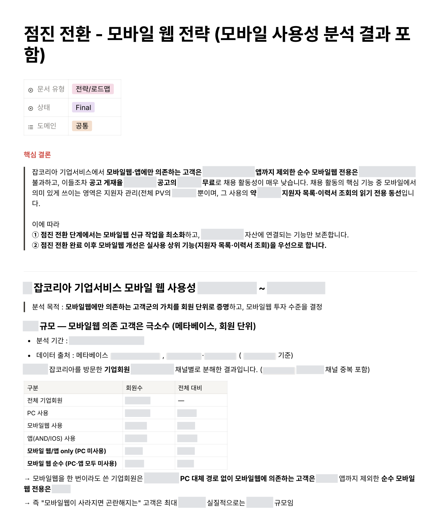

운영 중인 서비스를 바꾸는 과제
웍스피어는 잡코리아, 알바몬, 게임잡 세 채용 플랫폼의 기업서비스를 통합하는 새 플랫폼을 개발하고 있었습니다. 제가 이 프로젝트에 합류했을 때는 잡코리아 기업회원만을 대상으로 베타 출시를 준비하던 단계였습니다.
프로젝트 총괄을 맡아 가장 먼저 확인한 것은 기존 고객이 새 플랫폼에서도 채용 활동을 이어갈 수 있는지였습니다. 주요 기능은 구현돼 있었지만 실제 업무에 필요한 세부 기능과 흐름에는 차이가 있었습니다. 공고를 등록하고 지원자를 관리하던 기존의 채용 경험을 그대로 이어가기에는 부족했고, 현재 상태로 기존 고객을 전환하기는 어렵다고 판단했습니다.
지금 집중할 두 목표를 다시 명확히 했습니다
기업이 채용 업무를 더 편하게 직접 수행하도록 하는 것과 잡코리아 기업서비스의 기술 기반을 현대화하는 것은 이미 제기된 과제였습니다. 여러 사업 목표와 경쟁 상황에 대응하려면 두 과제를 함께 해결해야 했고, 이를 위한 해법으로 세 채용 플랫폼을 통합하는 새 플랫폼 구축이 추진되었던 것입니다.
개선의 필요성은 분명했습니다. 공고 등록과 수정, 상품 선택과 구매를 영업 담당자나 영업 운영자에게 의존하는 경우가 많았고, 지원서 검토 이후의 업무도 충분히 다루지 못하고 있었습니다. 기존 .NET 기반 시스템은 기능 간 의존성과 누적된 제약으로 작은 기능 수정과 출시에도 병목이 컸습니다. 고객의 불편을 확인해도 제품에 빠르게 반영하기 어려운 구조였습니다.
새 플랫폼에서는 기존 구조의 제약에서 벗어나 기능을 설계하고 구현할 수 있었습니다. 하지만 기존 고객에게 필요한 기능과 운영 조건까지 갖춰 잡코리아 기업서비스를 대체할 수준에 도달하는 시점은 예측하기 어려웠습니다. 세 플랫폼의 통합은 그보다 더 넓은 범위의 과제였고, 지금 우선해서 해결해야 하는 문제인지에 대해서도 판단이 모이지 않은 상태였습니다.
저는 기존의 두 목표를 바탕으로 지금 집중할 기준을 다시 명확히 했습니다. 첫째, 고객이 진행 중인 채용을 이어가면서 공고 등록과 지원자 관리, 상품 선택과 구매를 더 편하게 직접 처리할 수 있어야 했습니다. 둘째, 이러한 경험을 지속적으로 개선할 수 있도록 기술적 토대를 마련해야 했습니다. 이 두 목표를 고객의 현재 채용 업무를 유지하면서 달성할 수 있는 실행 경로가 필요했습니다.
잡코리아를 먼저 바꾸고, 통합 플랫폼으로 확장할 수 있도록
기존 기업서비스는 영업 운영과 내부 관리 시스템에도 연결돼 있었습니다. 한 번에 전환하려면 화면에 보이는 기능뿐 아니라 기존 업무를 유지하는 데 필요한 조건까지 모두 맞춰야 했습니다. 그동안 고객 경험 개선은 늦어지고, 전환 시점에는 고객이 한꺼번에 큰 변화를 받아들여야 했습니다.
저는 이 문제와 대안을 리더십에 설명하고, 기존 잡코리아 기업서비스를 운영하면서 기능별로 개선하는 방향으로 리빌딩 전략을 바꿨습니다. 기존 기능을 100% 유지하는 것을 전환의 목표로 삼고, 새 플랫폼에 구현된 기능을 기존 서비스 안에 순차적으로 연결하는 계획이었습니다. 고객은 채용을 계속하면서 준비된 영역부터 새로운 경험을 이용할 수 있었습니다.
메뉴별로 기존 기능을 유지할 영역, 새 플랫폼의 자산을 활용할 영역, 기능 보완과 구조 조정이 필요한 영역을 나눴습니다. 새 자산을 활용하더라도 수정 부담이 큰 영역은 별도 구축을 검토했습니다. 두 시스템을 함께 관리하는 부담을 감수하는 대신, 전체 전환을 기다리지 않고 고객에게 개선을 제공하며 다음 개편에 반영할 수 있는 경로를 선택했습니다.
이 전환안을 목업으로 만들어 기술 리더를 포함한 모든 팀원들과 예상 화면을 검토했습니다. 각 업무 담당자가 구현 조건과 제약사항을 확인하고 실행 가능한 범위와 순서에 합의했습니다. 화면의 점진 전환과 데이터 이관, 신규 기능 설계는 별도 과제로 나눠 병행하도록 계획했습니다.
통합 기업 플랫폼으로의 확장 방향은 유지했습니다. 다만 통합에 필요한 요구사항과 제약을 모두 식별한 상태는 아니었으므로, 잡코리아의 개선을 먼저 진행하면서 이후 요구가 구체화돼도 대응할 수 있도록 팀은 확장성을 고려해 아키텍처를 설계했습니다.
그렇다면, 무엇을 먼저 바꿀까?
문제 해결의 기대 효과가 가장 큰 영역은 공고 등록이었습니다. 채용을 시작하는 첫 단계이면서 고객이 영업 담당자와 영업 운영자에게 가장 많이 의존하는 영역이었기 때문입니다. 고객이 직접 공고를 등록할 수 있도록 바꾸면 업무 비효율을 줄이고, 상품 선택과 구매까지 제품 안에서 개선할 기회도 넓힐 수 있었습니다.
하지만 가장 먼저 진행한 것은 지원자 관리 개편이었습니다. 공고 등록은 공고와 상품, 기업정보가 얽힌 구조를 분석하고 기술적 합의를 만드는 데 시간이 필요했습니다. 그동안 고객에게 먼저 제공할 개선을 다음 세 가지 기준으로 판단했습니다.
1. 고객이 이미 직접 처리하던 업무여서 전환 부담이 작았습니다.
지원자 관리는 영업 담당자나 운영 대행에 맡기지 않고 고객이 직접 하던 업무였습니다. 고객과 영업조직의 업무 분담을 바꾸지 않고도 기존 업무 안에서 개선된 경험을 제공할 수 있었습니다.
2. 준비된 기능을 활용해 더 적은 추가 작업으로 제공할 수 있었습니다.
베타 버전에는 전형 단계별 지원자 관리와 지원자 및 구인기업 간 커뮤니케이션 기능이 이미 구현돼 있었습니다. 기존 서비스에 필요한 기능을 보완해 연결하면, 공고 등록에 비해 첫 개선을 제공하는 데 드는 추가 작업과 기회비용이 작았습니다.
3. 고객의 불편을 줄이면서 채용 데이터를 쌓을 기반을 마련할 수 있었습니다.
기존 면접 제안과 결과 통보 기능의 사용률은 낮았고, 영업조직을 통해 간접적으로 들은 고객 의견에서도 별도의 채용 관리 시스템(ATS)이나 엑셀로 지원자를 관리한다는 피드백이 많았습니다. 지원서 검토부터 전형 단계별 소통, 합격과 불합격 처리, 평가를 한곳에서 이어가면 여러 도구를 오가는 불편을 줄일 수 있었습니다. 플랫폼에 쌓일 채용 진행과 평가 정보는 향후 구직자 대상 공고 추천과 기업의 채용 성과에 맞는 서비스 제안을 개선할 기반으로 봤습니다.
이 판단에 따라 지원자 관리를 먼저 제공하고, 공고 등록의 분석과 설계를 병행하도록 로드맵을 구성했습니다. 기대 효과의 크기와 함께 고객에게 개선을 제공하기까지의 시간, 준비된 자산과 추가 작업을 고려한 순서였습니다.




개발 기간이 크게 늘어나는데, 모바일까지 한 번에 바꿔야 할까?
지원자 관리의 전체 기능을 모바일까지 개편하려면 상당한 추가 개발이 필요했습니다. 같은 기능을 모든 채널에 제공하기에 앞서, 고객이 모바일에서 실제로 어떤 업무를 하는지 확인했습니다.
회원별 PC, 모바일웹과 앱의 방문 기록으로 모바일 의존도를 살피고, 기능별 페이지 이용 로그로 주요 행동을 확인했습니다. 모바일 이용은 지원자 목록과 이력서를 조회하는 행동에 집중돼 있었습니다. 이를 근거로 목록과 이력서 조회는 유지하되, 첫 출시에서는 개편된 지원자 관리 기능을 모바일에 제공하지 않기로 했습니다.
결정 후에는 모바일 이용이 잦아 변경의 영향을 먼저 받을 고객을 추렸습니다. 영업팀과 함께 변경 사항을 빠르게 사전 안내해, 고객이 업무 중에 갑자기 달라진 기능을 마주하지 않도록 했습니다.
이후 모바일 개편의 필요성을 판단할 수 있도록 행동 측정 기준도 함께 정했습니다. 합격 통보와 면접 제안 등 관리 기능을 시도하는 행동을 기록하도록 이벤트를 추가해, 조회를 넘어선 수요를 관찰할 수 있게 했습니다.

마지막 과제, 채용 중인 고객의 불편을 최소화할 것
출시를 앞두고 남은 과제는 개편된 기능을 적용하는 동안에도 고객의 채용 업무가 이어지도록 하는 것이었습니다. 기존 시스템과 새 시스템을 연결한 구조에서는 사전 검증만으로 실제 운영 환경의 모든 문제를 예측하기 어려웠습니다. 그래서 적용 대상을 조금씩 넓히며 고객의 업무와 시스템 상태를 확인하는 점진 배포를 선택했습니다.
점진 배포가 위험을 줄이는 과정이 되려면 각 단계에서 실제 사용이 일어나고, 그 결과를 보고 다음 단계로 넘어갈 수 있어야 했습니다. 이를 위해 공고를 게재하고 지원자를 검토 중인 활동 고객군과 무작위로 선정한 고객군을 함께 배포 대상으로 구성했습니다. 고객군을 점차 늘려가며 실제 채용 과정에서 문제가 발생하는지 관찰하는 방식이었습니다.
다만 같은 결함이라도 고객의 채용 규모에 따라 영향은 달라질 수 있었습니다. 특히 동시에 수백 건의 채용을 진행하는 기업은 지원자와 관리 데이터가 많아 작은 결함도 여러 채용 건에 영향을 줄 수 있었습니다. 이 고객들은 전체 배포를 결정하기 전까지 별도로 분리하고, 다른 고객군에서 적용 범위를 넓히는 동안에도 포함 시점을 보수적으로 판단했습니다.
배포 대상과 함께 다음 단계로 확대할 조건, 멈춰야 할 조건도 사전에 정했습니다. 핵심 화면 진입과 지원자 정보 표시, 서버 오류와 응답 지연을 확인해 채용 업무를 막거나 안정성을 해치는 문제가 있으면 확대를 중단하도록 했습니다. 이때 복구 방식 역시 고객의 업무에 미칠 영향을 고려해야 했습니다. 새로 생성된 데이터는 보존되지만 기존 화면에서 모두 이용할 수는 없었기 때문입니다. 따라서 초기에는 기존 화면으로 되돌리는 방안을 검토하되, 적용 범위가 넓어진 뒤에는 확대를 멈추고 문제를 수정한 후 재개하는 원칙을 세웠습니다.
이렇게 정한 배포 대상과 예외 고객, 확대 및 중단 조건, 복구 원칙을 하나의 배포 정책으로 문서화했습니다. 도메인 PO, 개발팀과 영업팀이 같은 기준을 공유하고, 단계별 확대 여부와 예외 고객의 포함 시점을 함께 판단할 수 있도록 했습니다.
지원자 관리 100% 적용, 다음 전환으로 이어지는 첫 성과
지원자 관리 개편은 롤백을 검토해야 할 상황이나 배포 중단 없이 전체 고객에게 100% 적용했습니다. 초기 배포에서 제외했던 고객도 영업팀과 협의해 최종 포함했습니다. 고객이 채용 업무를 이어가는 동안 새 지원자 관리 기능을 제공하며, 기업서비스 리빌딩의 첫 전환을 마쳤습니다.
배포 이후에는 고객 문의에 대응하며 사용 과정의 불편과 개선 요청을 후속 백로그로 정리했습니다. 기능을 제공하는 데서 나아가 고객이 실제 채용 업무에서 겪는 문제를 확인하고 개선하는 단계로 들어섰습니다. 고객의 사용 경험을 바탕으로 다음 개편을 이어갈 수 있게 된 것이 첫 전환의 성과였습니다.
운영 중인 서비스를 단계적으로 전환하려면 개발 범위뿐 아니라 배포 대상과 확대 판단 기준도 함께 설계해야 합니다. 기존 시스템과 새 시스템의 연결 지점, 고객별 이용 방식과 데이터 규모에 따라 같은 변경도 영향이 달라지기 때문입니다. 이번 경험을 통해 기능별 전환 순서와 고객군별 적용 순서를 함께 정하고, 실제 사용을 관찰하며 다음 단계로 넘어가는 접근을 구체화했습니다.
다음 과제는 개편된 지원자 관리가 고객의 실제 채용 업무에 정착하도록 하는 것입니다. 고객이 전형 단계와 결과를 플랫폼 안에서 관리하도록 이끌고, 그 과정의 불편을 줄여 지속적으로 활용할 수 있게 해야 합니다. 이를 통해 축적될 채용 데이터를 고객 상황에 맞는 상품 제안과 다음 채용 시 재이용으로 연결하는 방향을 후속 과제로 남겼습니다.